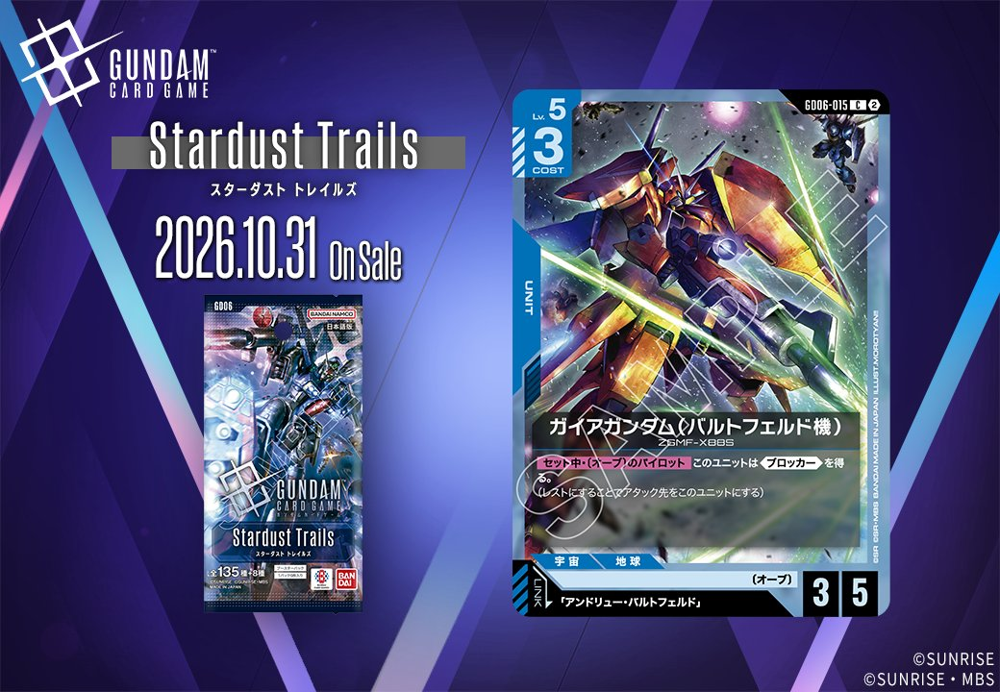

今回取り上げるのは、GD06「Stardust Trails」に収録される青のカード2枚です。1枚は COMMAND の「堅実な支援」(GD06-104)、もう1枚は「アンドリュー・バルトフェルド」をリンク条件に指定する UNIT「ガイアガンダム(バルトフェルド機)」(GD06-015) となっています。発売日は2026年10月31日です。

堅実な支援 (GD06-104)
| 色 | 青 | タイプ | COMMAND |
| Lv | 2 | コスト | 1 |
| パイロット | チャック・キース（補正 AP+1 / HP+0） 〔地球連邦〕、〔アルビオン隊〕 | ||
効果: 【メイン】【アクション】HP3以下の相手のユニット1つを選ぶ。それを持ち主の手札に戻す。
コスト1のコマンドで、HP3以下の相手のユニット1つを持ち主の手札に戻せます。【アクション】を持つため相手のターン中にも撃てて、《ブロッカー》を構えたユニットを退かしてアタックを通す用途が見込めます。破壊ではなく手札に戻す処理なので、相手には再配備の余地が残ります。対象がHP3以下に限られる点は制約で、同色で採用率46.6%のアムロ・レイ(ST01-010)の【セット時】がHP5以下を対象にレストにするのと比べると射程は狭めです。とはいえコスト1で相手の盤面を1つ減らせる軽さがあり、採用率49.2%の覚悟の表れ(GD01-100)と並ぶ軽量コマンド枠の候補になるでしょう。

ガイアガンダム(バルトフェルド機) (GD06-015)
| 色 | 青 | タイプ | UNIT |
| Lv | 5 | コスト | 3 |
| AP | 3 | HP | 5 |
| リンク条件 | 「アンドリュー・バルトフェルド」 | ||
効果: 【セット中】〔オーブ〕のパイロットこのユニットは《ブロッカー》を得る。(レストにするとアタック先をこのユニットにする)
コスト3でAP3/HP5と、APよりHPに寄った数値配分のユニットです。《ブロッカー》は常時ではなく、【セット中】に〔オーブ〕のパイロットが乗っている間だけ得られる条件付きで、素のままでは受け役として機能しません。裏を返せば条件を満たすだけでHP5の身代わりが立ち、アタック先をこのユニットに引き受けられます。リンク先は「アンドリュー・バルトフェルド」で、同一ユニット上での運用が前提になるでしょう。同色で採用率44%のガンダム(ST01-001)にパイロットがセットされていれば、自分のターン中は自分のユニットすべてがAP+1されるため、こちらもAP4で攻めつつ受けに回れます。
関連カード
-
 覚悟の表れ(GD01-100)青系デッキ内採用率49.2% (3491デッキ)
覚悟の表れ(GD01-100)青系デッキ内採用率49.2% (3491デッキ) -
 アムロ・レイ(ST01-010)青系デッキ内採用率46.6% (3304デッキ)
アムロ・レイ(ST01-010)青系デッキ内採用率46.6% (3304デッキ) -
 ガンダム(ST01-001)青系デッキ内採用率44% (3123デッキ)
ガンダム(ST01-001)青系デッキ内採用率44% (3123デッキ) -
 ガンタンク(GD01-008)青系デッキ内採用率31.2% (2214デッキ)
ガンタンク(GD01-008)青系デッキ内採用率31.2% (2214デッキ) -
 コルシカ基地(ST02-016)青系デッキ内採用率29.5% (2093デッキ)
コルシカ基地(ST02-016)青系デッキ内採用率29.5% (2093デッキ) -
 ムラサメ（アンドリュー・バルトフェルド専用機）(GD05-003)青系デッキ内採用率0.7% (50デッキ)
ムラサメ（アンドリュー・バルトフェルド専用機）(GD05-003)青系デッキ内採用率0.7% (50デッキ) -
ムラサメ（アンドリュー・バルトフェルド専用機）(GD05-003_p1)青系デッキ内採用率0% (0デッキ)
-
 アンドリュー・バルトフェルド(GD05-082)青系デッキ内採用率0.8% (55デッキ)
アンドリュー・バルトフェルド(GD05-082)青系デッキ内採用率0.8% (55デッキ)